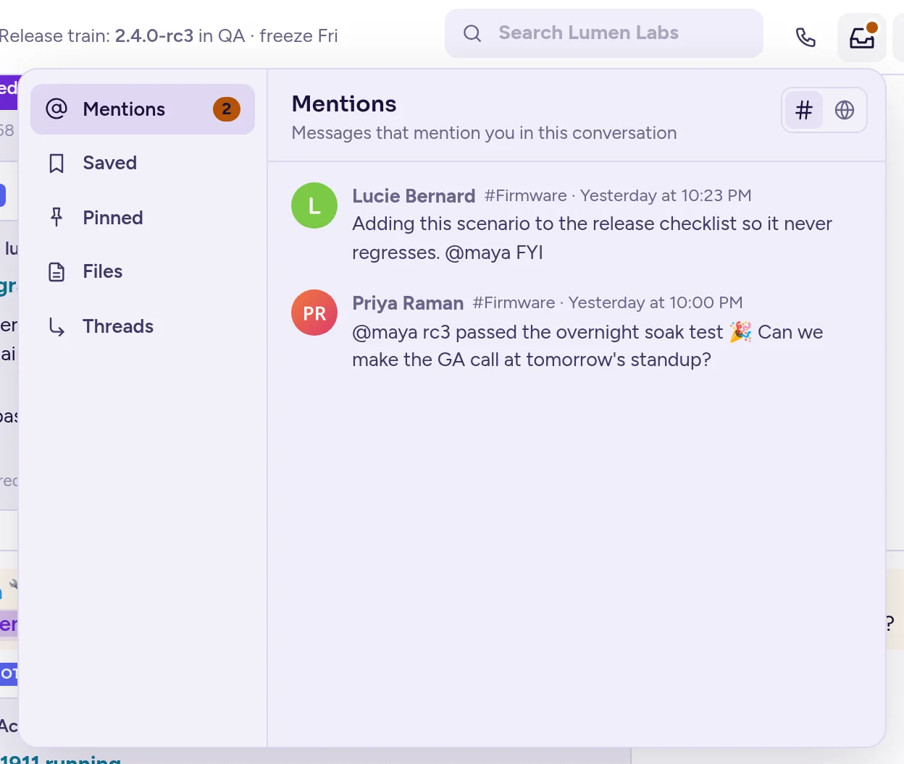

Rechercher et trouver des éléments
Trouvez n'importe quel message, fichier, canal ou personne, et revenez à l'essentiel : vos mentions, vos messages marqués et épinglés, et les fils de discussion que vous suivez.
Recherche rapide
La recherche rapide permet de trouver des canaux, des conversations, des personnes et des messages depuis une seule boîte.
- Appuyez sur Ctrl+K (⌘+K sur Mac), ou cliquez sur Tout rechercher (la loupe en bas de la barre latérale de l'équipe).
- Tapez quelques lettres. Les résultats s'affichent pendant la saisie, regroupés en Canaux & conversations, Personnes et Messages. Utilisez les onglets Tout, Canaux, Personnes et Messages pour les filtrer.
- Utilisez les touches fléchées et appuyez sur Enter pour ouvrir un résultat, ou cliquez dessus. Sélectionner une personne ouvre votre message personnel avec elle.
Les messages sont recherchés dans l'équipe actuelle ; passez à Dans toutes les équipes pour les rechercher toutes. Pour voir tous les messages correspondants, choisissez Rechercher tous les messages pour « … » : les résultats s'ouvrent dans le panneau à droite. Avant de taper, la boîte liste vos conversations Récents et vos Recherches récentes.
La recherche rapide liste les canaux auxquels vous avez adhéré. Pour trouver des canaux auxquels vous n'avez pas encore adhéré, utilisez Parcourir les canaux dans le menu de l'équipe : voir Trouver et rejoindre des canaux.
Rechercher des messages
- Cliquez sur la boîte de recherche en haut de la conversation (« Rechercher … » suivi du nom de l'équipe).
- Tapez les mots que vous recherchez. Les suggestions sous la boîte proposent Rechercher dans #canal (ou Rechercher dans cette conversation) pour ne chercher que là où vous êtes, les Filtres ci-dessous, et vos recherches Récents.
- Appuyez sur Enter. Les Résulats de la recherche s’ouvrent dans le panneau à droite, avec le nombre de correspondances.
La recherche cherche des mots entiers, ainsi que le début de mots se terminant par *.
Filtres
| Type | Pour trouver |
|---|---|
from:@marie | des messages écrits par Marie |
in:design | des messages dans un canal ou une conversation |
on:2026-10-05 | des messages d'un jour donné |
before:2026-10-05, after:2026-09-01 | des messages avant ou après un jour donné |
"exact phrase" | ces mots, ensemble et dans cet ordre |
-draft | des messages sans le mot « brouillon » |
deploy* | des mots commençant par « deploy » |
ext:pdf | des fichiers d'un type donné |
#hashtag | des messages avec ce mot-dièse |
Au fur et à mesure que vous tapez from: ou in:, la liste de suggestions affiche les personnes ou canaux correspondants ; pour on:, before: et after:, Choisir un jour ouvre un calendrier. Vous pouvez combiner les filtres, par exemple release from:@marie in:platform after:2026-09-01. Cliquer sur un hashtag dans un message lance également une recherche pour celui-ci. Un # suivi du nom d'un des canaux de la communauté est un lien vers ce canal, et non un hashtag.
Utiliser les résultats
- Cliquez sur un résultat pour aller au message dans sa conversation ; il est mis en évidence.
- Chaque résultat comporte des boutons pour Ouvrir le fil de discussion, Enregistrer, Épingler au canal et Copier le lien.
- Basculez entre Messages et Fichiers en haut du panneau. Pour les fichiers, filtrez par type : Documents, Tableurs, Présentations, Code, Images, Audio ou Vidéo.
- Cliquez sur Agrandir le panneau pour donner plus de place aux résultats, ou sur Ouvrir dans une nouvelle fenêtre.
Si rien ne correspond, essayez un autre mot ou un filtre. Vous pouvez aussi taper /search suivi de vos mots dans n'importe quelle zone de message.
Mentions, messages marqués et épinglés
Le bouton de la boîte de réception en haut à droite d'une conversation (Mentions, messages marqués, épinglés et fils de discussion) regroupe dans un seul panneau :
- Mentions : les messages qui vous mentionnent.
- Marqué : les messages que vous avez marqués.
- Épinglé : les messages épinglés dans cette conversation.
- Fichiers : les fichiers partagés dans cette conversation.
- Fils de discussion : les fils de discussion que vous suivez.

Un point sur le bouton indique que quelqu'un vous a mentionné là-bas. Dans Mentions, Marqué et Fils de discussion, utilisez les deux boutons en haut pour choisir d'afficher les éléments de Cette conversation ou de Toute la communauté. Cliquez sur un élément pour y aller, ou pour ouvrir son fil de discussion.
Les mêmes listes sont disponibles dans la liste de vos messages personnels (cliquez sur Tous les messages personnels, la bulle de chat en bas de la barre latérale de la communauté) : Mentions, avec le nombre de vos mentions non lues, Fils suivis et Messages marqués, pour l'ensemble de la communauté. Appuyez sur Ctrl+Shift+M (⌘+Shift+M sur Mac) pour ouvrir vos Mentions récentes dans le panneau de droite.
Les informations d'un canal (cliquez sur son nom) lient également à ses Messages épinglés et ses Fichiers, avec leurs compteurs.
Rattraper les messages non lus
- Lorsque vous ouvrez un canal avec des messages non lus, une ligne marque où ils commencent, et une bannière en haut indique combien de nouveaux messages sont arrivés depuis votre dernière visite. Cliquez sur Aller à pour aller au premier.
- Pendant que vous faites défiler une conversation vers le haut, un bouton en bas de l'écran compte les nouveaux messages reçus ; cliquez dessus pour y accéder.
- Par défaut, une conversation non lue s'ouvre à l'endroit où vous l'aviez laissée. Pour l'ouvrir au message le plus récent, définissez Ouvrir les conversations non lues sur Au message le plus récent dans Paramètres › Messages.
- Pour y revenir plus tard, choisissez Marquer comme non lu dans le menu d'un message : la conversation reste non lue à partir de ce message.
- Alt+Shift+Up et Down permettent d'aller au canal non lu précédent ou suivant, et Ctrl+Shift+U n'affiche que les canaux non lus dans la barre latérale.
- Tout marquer comme lu dans le menu de la communauté, ou Shift+Esc, marque tous les canaux de la communauté comme lus.
Si des agents IA sont configurés, ils peuvent également résumer ce que vous avez manqué : voir Rattraper un canal et Résumés.
Liens vers les messages et les canaux
Chaque message et chaque canal a un lien : choisissez Copier le lien dans son menu. Ouvrir le lien amène directement n'importe qui qui peut le lire à l'endroit concerné, mis en évidence. Si le lien mène à un canal privé auquel vous n'avez pas accès, Antimatter vous demande de confirmer avant de le rejoindre, si vous y êtes autorisé.